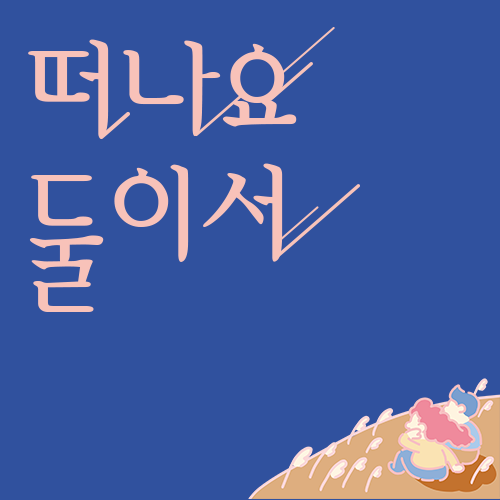
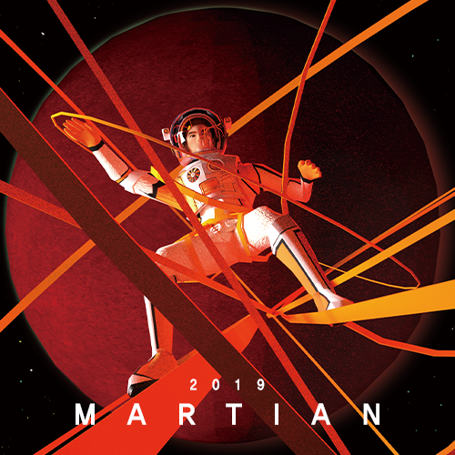

심청전 속 심청이는 자신을 희생하여 아버지를
구하고 해피엔딩을 이루었다. 하지만 과연 21
세기에서도 먹힐까? 생각하였다 그래서 21세기
에 심청이를 데려와 힘든고난을 극복하는 과정
을 유쾌하고 해학적으로 재구성하여 웹툰형식으
로 디자인하였다.

Multimedia Design떠나요 둘이서
중장년커플이 알콩달콩하면 왠지 불륜일것 같은 사회
적 편견과 소개팅앱은 불건전한 목적으로 이용될꺼라
는 인식이 있다. 또한 인구의 절반 이상이 중장년인데
소개팅앱의 이용율은 현저히 낮았다. 그래서 중장년
들이 안심하고 사용할 수 있으며, 건전한 이미지를 가
진 앱을 기획하게 되었다.

Moving Image Animation Martian
리틀리 스콧 감독의 영화 ‘마션’을 3D애니메이션으
로 재해석하여 긴박한 템포의 예고편을 디자인하였다.
마션은 화성에 홀로 남겨진 마크 와트니(멧 데이먼)가
지구로 돌아가기 위해 고군분투하는 줄거리이다. 아무
리 힘든 상황에서도 포기하지 않으면 심지어화성에서
도 살아 돌아올 수 있다는 메세지를 던진다.